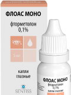
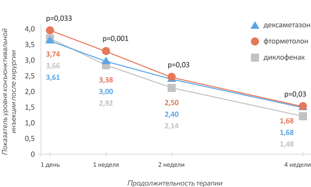
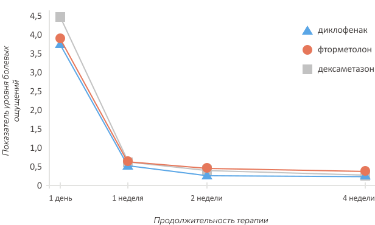
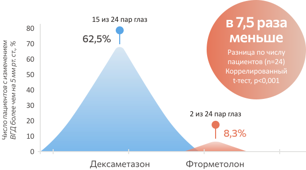
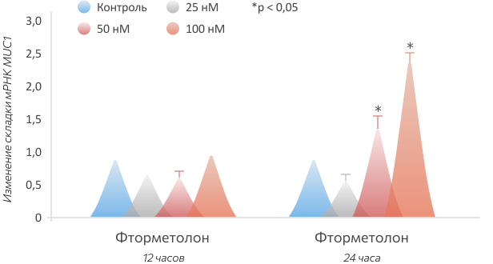
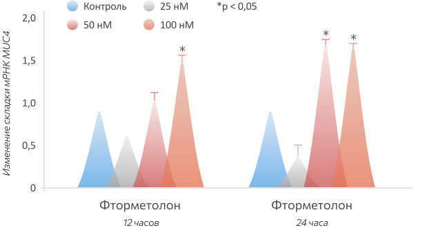
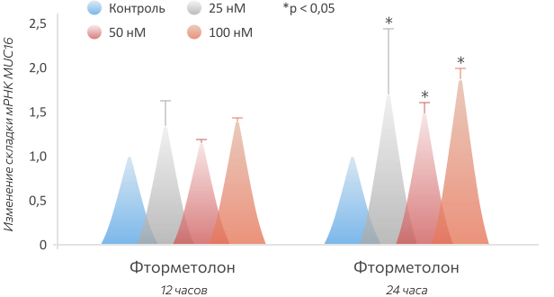
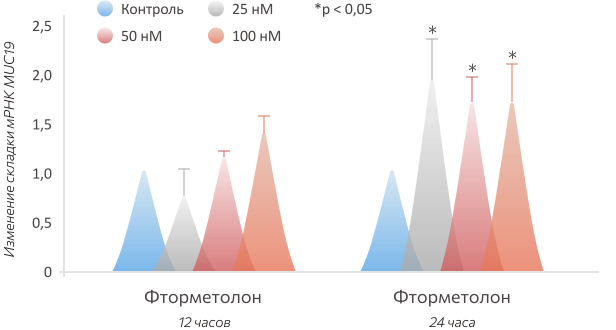
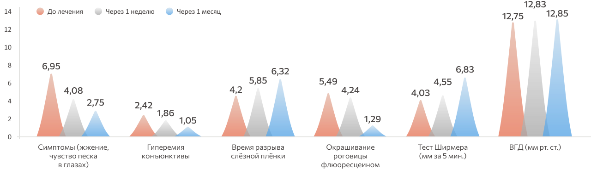

Современные глюкокортико-стероиды
в офтальмологической практике
Флоас Моно
(фторметолона ацетат)
новинка в России1
Глазные капли Флоас Моно (фторметолон) — современный глюкокортикостероид для местного применения1
Фторметолон1‑4:
-
способствует выраженному противовоспалительному действию
-
обладает меньшим риском офтальмогипертензии по сравнению, например, с дексаметазоном
-
помогает улучшению состояния глазной поверхности при лечении и профилактике синдрома «Сухого глаза»
-
имеет обширную международную доказательную базу
-
разрешён у детей с 2 лет
На сегодняшний день топические глюкокортикостероиды (ГКС) широко применяются в офтальмологии при различных нозологиях2,5‑11:
-
при аллергических и бактериальных конъюнктивитах
-
увеитах
-
блефаритах
-
кератитах
-
травмах глаза и оперативных вмешательствах
-
конъюнктивитах при синдроме «Сухого глаза»
-
поражениях переднего сегмента глаза при коронавирусной инфекции (COVID‑19) — кератоконъюнктивите, иридоциклите, конъюнктивите
-
В 2022 году в России зарегистрирован современный ГКС для местного применения — фторметолона ацетат (глазные капли Флоас Моно)1

Химическая формула фторметолона определяет его уникальные свойства12
Отсутствие группы —ОН в 21 положении молекулы способствует12:
-
меньшей склонности к повышению ВГД по сравнению с дексаметазоном
-
увеличению экспрессии муцинов эпителия роговицы и конъюнктивы
Атомы фтора
помогают проходить сквозь клеточные мембраны и соединяться с рецепторами, что способствует высокой противовоспалительной активности, характерной для фторированных глюкокортикостероидов12
Благодаря этерификации (ацетатной группе)
имеет высокую липофильность и, следовательно, быстро и глубоко проникает в очаг воспаления. Это способствует быстрому проявлению терапевтического эффекта и длительности действия препарата12
Метильные группы
защищают препарат от распада и дополнительно увеличивают продолжительность действия12
Показанное в исследованиях противовоспалительное действие фторметолона3
По результатам исследования,
фторметолон обладал противовоспалительным действием, сопоставимым с дексаметазоном, по истечении 4 недель терапии3:
Исследование влияния на послеоперационное воспаление фторметолона, дексаметазона и диклофенака3
Оценка степени конъюнктивальной инъекции3
Оценка уровня боли по ВАШ (визуальная аналоговая шкала)3
По рекомендациям ESCRS (Европейского общества катарактальных и рефракционных хирургов) для ведения послеоперационных больных важно назначение 3 групп препаратов1, 13‑15:
-
глюкокортикостероидов, например Флоас Моно (фторметолон)
-
антибиотиков, например Сигницеф® (левофлоксацин)
-
нестероидных противовоспалительных препаратов, например Броксинак® (бромфенак 0,09%)
Изучите результаты других исследований
Изученный профиль безопасности фторметолона4
Согласно исследованию,
фторметолон достоверно в меньшей степени приводил к повышению внутриглазного давления (ВГД) по сравнению с дексаметазоном3,4
Статистически значимая разница между воздействием дексаметазона и фторметолона для местного применения у пациентов с глаукомой
Фторметолон (Флоас Моно)
более селективный препарат по сравнению, например, с дексаметазоном и поэтому3,4:
-
оказывает меньший иммуносупрессивный эффект
-
меньше влияет на уровень ВГД
Экспрессия генов муцинов в эпителиальных клетках конъюнктивы и роговицы16
По результатам исследований,
фторметолон увеличивает экспрессию генов MUC1, MUC4, MUC16 и MUC19 в эпителиальных клетках конъюнктивы и роговицы за счёт активации глюкокортикоидных рецепторов16
Количественное определение методом ПЦР в реальном времени экспрессии генов16
MUC1
Доза 25 нМ не вызывала какого-либо заметного увеличения экспрессии гена MUC1, тогда как доза 50 и 100 нМ вызывала увеличение в 1,5 и 2,5 раза соответственно16
MUC4
Не наблюдалось увеличения экспрессии гена при дозе 25 нМ, тогда как увеличение в 1,5 раза наблюдалось как при дозе 50, так и при дозе 100 нМ16
MUC16
MUC19
Для MUC16 и MUC19 было отмечено 1,5‑кратное и 2‑кратное увеличение соответственно, при всех трёх испытанных дозах, что позволяет предположить, что действие фторметолона на эти муцины, возможно, уже достигло максимального эффекта при дозе 25 нМ16
Лечение и профилактика синдрома «Сухого глаза» (ССГ)2
Фторметолон 0,1% способствовал облегчению симптомов и признаков ССГ средней и тяжёлой степени2
Изменение показателей ССГ согласно критериям оценки по балльной шкале
Согласно исследованию,
применение фторметолона статистически значимо увеличивало экспрессию муцинов в эпителиальных клетках конъюнктивы и роговицы, что способствует нормализации состояния глазной поверхности при воспалительных заболеваниях глаз2
Флоас Моно
(фторметолона ацетат)
новинка в России1
Глазные капли Флоас Моно (фторметолон) — современный глюкокортикостероид для местного применения1
Фторметолон1‑4:
-
способствует выраженному противовоспалительному действию
-
обладает меньшим риском офтальмогипертензии по сравнению, например, с дексаметазоном
-
помогает улучшению состояния глазной поверхности при лечении и профилактике синдрома «Сухого глаза»
-
имеет обширную международную доказательную базу
-
разрешён у детей с 2 лет
Лечение воспалительных заболеваний9:
-
конъюнктивы
-
роговицы
-
переднего отрезка глаза (в том числе аллергические конъюнктивиты, оперативные вмешательства, синдром «Сухого глаза»)